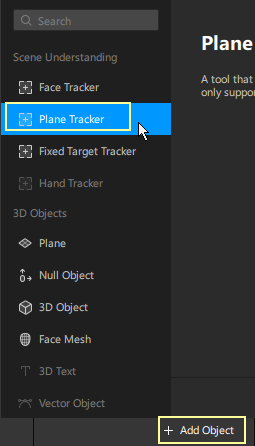

We do need to understand that there can only be one plane tracker in an effect.
Adding a Plane Tracker
- In the Scene panel, click on Add Object, and select Plane Tracker.

Making an object appear when a surface is detected
>To make an object appear when the camera detects a surface, all you need to do is make the object a child of the plane tracker in the Scene panel.

- Right-click on the plane tracker in the Scene panel, and select 3D Object.
- Drag an object from the Assets panel or your desktop, straight onto the plane tracker in the Scene panel.
- Or you can even import an object by selecting Add Object and importing from your computer.